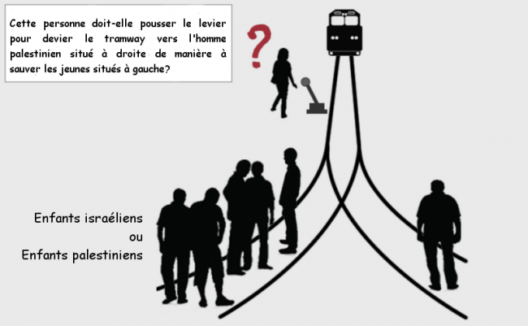
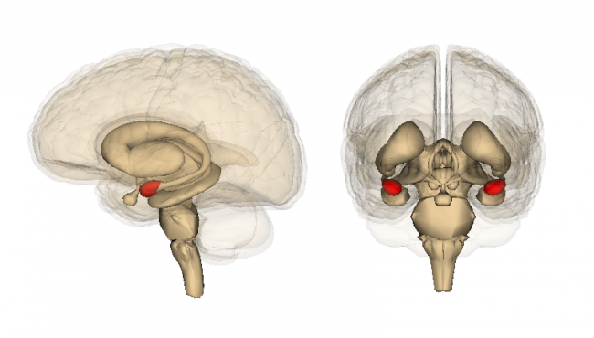

Chaque année, de nouveaux mots et de nouvelles expressions naissent ou renaissent dans un débat public constamment remué par l’évolution des techniques et des sociétés. Or le langage joue une influence considérable – souvent implicite – sur la formation des opinions, d’où résulte l’exigence toujours renouvelée d’en préciser le sens et d’en mesurer la portée.
A la suite des tueries commises en 2015 sur le territoire français, une expression est devenue un élément de langage quasi incontournable pour dénoter notre ennemi public n°1 : le « cerveau des attentats », cette menace dépersonnalisée et multiforme qui prospère tantôt dans les mosquées salafistes, tantôt dans les faubourgs de Saint-Denis, tantôt en Syrie.
Reprise par la plupart des organes de presse et par de nombreux hommes politiques, le « cerveau des attentats » fait partie de ces expressions toutes faites qui traduisent d’abord la difficulté, sinon le renoncement à penser le terrorisme au-delà des lieux communs et des rhétoriques trompeuses.

Un cerveau pour dix terroristes ?
Si on prend l’expression au pied de la lettre, chercher sans relâche le cerveau d’attentats commis par une dizaine d’individus revient en quelque sorte à nier l’existence d’une psychologie propre à ceux-là qui ont agi. Elle réduit ces kamikazes à des pantins cérébro-lessivés par une intelligence occulte, extérieure à notre société et étrangère à notre culture. Dangereuse car implicite, cette représentation de la situation est problématique à l’heure où nous voudrions déradicaliser et donc comprendre l’infime frange de la jeunesse française candidate au « djihad mineur ».
Les motifs d’espoir existent pourtant. Depuis une décennie, quelques chercheurs se sont penchés avec rigueur sur les déterminants de la violence terroriste. Dans le même temps, neurobiologistes et psychologues ont fait d’importants progrès dans la compréhension des comportements violents et antisociaux. Il est urgent que ces connaissances entrent dans le débat public, qu’elles soient prises en compte par les institutions, et qu’elles fassent l’objet de sérieux approfondissements. C’est aussi le sens de l’appel publié le 18 novembre 2015 par Alain Fuchs, président du CNRS.
Le « cerveau des attentats » est-il un « cerveau malade » ?
Bien qu’il soit juste et compréhensible sur un plan moral, le lexique de la folie et de l’aliénation (« fous », « monstres », « malades », etc.) utilisé pour décrire les terroristes est rarement justifié sur le plan clinique. En effet, les nombreuses études rétrospectives menées sur les combattants de l’IRA (Irlande), de l’ETA (Pays-Basque) ou d’Al-Qaeda montrent que les terroristes – islamistes ou non – sont le plus souvent dans la « distribution normale » en matière de pathologies psychiatriques, d’origine sociale ou d’éducation [PDF]. Autrement dit, il n’existe pas de tableau psychiatrique, psychologique ou socioéconomique qui serait typique du terroriste kamikaze.
Établi et accepté dans un rapport remis au Congrès des Etats-Unis dès 1999 [PDF, page 40], ce constat a aussi été discuté dans la prestigieuse revue Science [PDF, PDF] sous l’impulsion de Scott Atran. Pionnier de la recherche sur le terrorisme, cet anthropologue franco-américain rappelle par ailleurs que le « succès » associé à l’engagement djihadiste sur Twitter ou Facebook constitue une motivation aussi simple que puissante pour les candidats au martyre, sensibles au respect et à l’admiration suscités chez certains par leur projet morbide (voir l’intervention d’Atran auprès du conseil de sécurité de l’ONU, en anglais, et le rapport en français qui lui est associé).
Un altruisme paradoxal
Psychologiquement, l’attentat suicide s’apparente d’ailleurs plus à ce que les chercheurs nomment une « punition altruiste » qu’à la folie meurtrière responsable des nombreuses tueries observées aux Etats-Unis. Cette dernière est souvent liée à une pathologie mentale préexistante, ce qui explique les efforts de Barack Obama pour renforcer le contrôle des ventes d’armes aux individus souffrant de maladies psychiatriques. Au contraire, la punition altruiste consiste à encourir un coût pour rétablir une norme sociale (de coopération ou autre) qu’il juge plus significative que son intérêt personnel. Le soutien des autres membres de groupe et le rôle des normes sociales joue un rôle important dans ce type de comportements.
Ainsi, que les terroristes aspirent à la charia ou à la souveraineté démocratique en terre d’islam ne change pas grand-chose, puisque le soutien (effectif ou présumé) du groupe social auquel ils s’identifient apparaît comme la cause première de leur démarche. C’est aussi pourquoi l’échange bidirectionnel entre les cultures arabo-musulmanes et judéo-chrétiennes est le premier remède contre le terrorisme. Symbolisée par l’ouverture des synagogues, des églises et des mosquées ou encore par la tolérance des signes religieux comme la kippa, la croix et le voile, la construction du sentiment d’appartenance à la société française dépend fortement de la capacité des citoyens à comprendre les émotions et les sentiments moraux qui animent autrui au-delà du cercle social habituel.
Si l’appartenance religieuse joue évidemment un rôle important puisqu’elle supplante l’appartenance nationale dans l’imaginaire des djihadistes, la recherche montre que ceux-ci ne naissent pas et ne vivent pas dans un milieu plus religieux que la moyenne [PDF]. Une étude menée en Palestine suggère même qu’en dépit de sa capacité à segmenter l’humanité en communautés de croyances, le sentiment religieux lui-même ne prédispose pas à considérer le terrorisme comme une cause moralement juste.

Adaptant le célèbre « dilemme du tramway », les chercheurs ont demandé à plus de 1000 jeunes de décider s’il serait juste ou non de tuer un Palestien pour sauver cinq Israéliens ou cinq Palestiniens. Au premier groupe de sujets, on demandait de décider directement de la meilleure conduite à tenir. Au second groupe, on demandait quelle décision Dieu approuverait le plus. Or, contrairement à l’idée reçue selon laquelle les croyances religieuses seraient l’épicentre de la violence inter-ethnique, les jeunes du second groupe étaient clairement plus enclins que ceux du premier groupe à sacrifier l’homme palestinien pour sauver des vies israéliennes…
Peut-on prévenir les dérives violentes à l’aide des neurosciences ?
Si le terroriste ne se distingue ni par son état mental, ni par sa religiosité, ni par son niveau d’éducation, ni par ses croyances, comment initier une réflexion d’ordre neurobiologique ? Commençons peut-être par ce qui fait du djihadiste un criminel : la violence préméditée et le passage à l’acte.
En termes scientifiques, la violence préméditée correspond à l’agression proactive, par opposition à l’agression réactive. Les causes et les conséquences de ces deux phénomènes sont très différentes. En 2015, une étude menée chez plus de 250 adolescents a par exemple montré que la violence proactive pourrait refléter la volonté d’accéder à un statut social élevé, tandis que la violence réactive dénoterait plutôt un statut social bas [PDF]. De plus, alors que la violence proactive n’est pas ou peu dépendante des niveaux circulants de cortisol (l’hormone du stress), la violence réactive l’est fortement. Enfin, l’agression proactive résulte plutôt d’une difficulté à ressentir des émotions, tandis que l’agression réactive provient d’une incapacité à réguler ces dernières.
Au niveau cérébral, ces découvertes se traduisent, chez les individus violents de type proactif, par l’hypo-réactivité d’une structure centrale pour les émotions, l’amygdale. Chez les individus violents de type réactif, on observe au contraire une hyper-réactivité de cette même structure. Poursuivant une piste de recherche prometteuse, un groupe de recherche a même montré qu’une stimulation électrique douce du cortex préfrontal antérieur permettait de réduire les niveaux d’agression proactive, mais qu’elle restait sans effet sur les niveaux d’agression réactive.

Etant donné que la stimulation du cortex préfrontal antérieur modifie aussi la manière dont les individus perçoivent les relations de dominance entrenues avec autrui, ces résultats renforcent peut-être le lien entre violence proactive et quête de statut social (voir aussi la thèse soutenue par l’auteur du présent blog, PDF, p. 241-246).
Sera-t-il un jour possible par cette technique de prévenir les dérives en traitant précocément les auteurs d’actes violents ? Des essais cliniques répondront peut-être à cette question dans les deux décennies à venir. En attendant, il faut garder à l’esprit que la visibilité des études en laboratoire est limitée, puisque les protocoles expérimentaux les plus « violents » utilisent seulement des petits chocs électriques, de faible intensité et sans conséquences.
Syndrome E, amphétamines et psychopathie
Il y a presque 20 ans, le neuroscientifique Itzhak Fried proposait déjà que les individus capables de tuer froidement se démarquent moins par un raisonnement dysfonctionnel que par une « fracture cognitive » entre processus émotionnels et décisionnels [PDF]. Cette fracture aboutirait à ce que Fried a appelé le « Syndrome E » apparenté à la psychopathie, qui mêle disparition de l’empathie et diverses modifications émotionnelles.
D’ailleurs, sans altérer profondément le libre arbitre ou la volonté comme le voudrait un fantasme très répandu, la cocaine et les amphétamines utilisées par certains djihadistes peuvent néanmoins faciliter le passage à l’acte et le sang-froid. En amont de l’acte lui-même, parce qu’ils agissent sur le système dopaminergique et altèrent les activités de l’amygdale, ces psychostimulants miment en quelque sorte la psychopathie et induisent un important narcissisme, une confiance en soi exacerbée, ainsi qu’une sensibilité accrue aux questions de dominance sociale. La rencontre avec ces molécules joue donc peut-être un rôle dans les changements de personnalité qui précèdent ou accompagnent la radicalisation.
Conclusion
Pour conclure, nous espérons avoir montré que la recherche sur les causes du terrorisme, à l’échelle de l’individu et de son groupe social, est possible, souhaitable, et que ses conclusions s’opposent parfois directement à certaines idées préconçues sur le phénomène. C’est pourquoi l’idée selon laquelle les seuls cerveaux qui importent sont ceux qu’il nous resterait à tuer ou à emprisonner est particulièrement mortifère.
En focalisant notre attention sur cet insaisissable « cerveau des attentats » qui gambaderait entre les bombes de nos Rafales, nous perdons de vue l’essentiel : les causes ayant amené des Français à sacrifier leur vie pour punir le peuple auquel ils sont censés appartenir. Tout comme la vraie-fausse « fermeture des frontières » actée puis annulée par François Hollande le 13 novembre au soir ou l’ubuesque débat sur la « déchéance de nationalité », la traque du « cerveau des attentats » s’inscrit dans un subtil jeu de glissements sémantiques qui servent sans doute les ambitions électorales de certains, mais qui s’opposent aussi à une lutte intelligente contre le terrorisme.